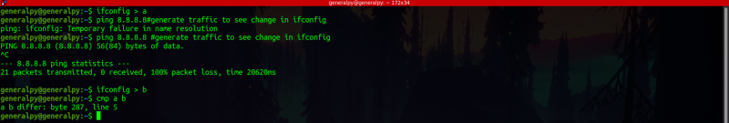
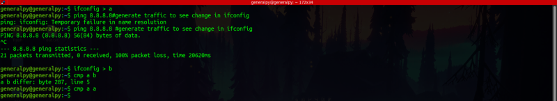
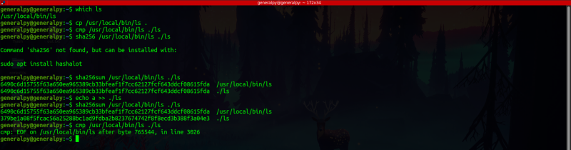
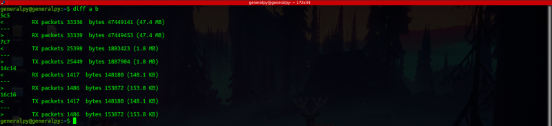

cmp file is used to compare 2 text or binary files. We just have to pass 2 files to it to compare them.

cmp gives where our files differ.
If 2 lines are same, cmp will not give any output.

One more way to compare 2 files is to calculate hashes of the files. We can use sha256sum command to calculate sha256 hash of files.

diff command is more helpful when comes to comparing files. It can be used to find differences between 2 files.

Legend of diff output :
ncm : This means that line n differs and c means that we have to replace line n in first file with line m to make both files identical. Two more characters a and d are also present which means add and delete line respectively.
> : Lines from second file
< : Lines from first file
There is patch command which can take output produced by diff file and can apply it to one or more original files. This helps in patch management.
Other useful options are -B which ignores blank spaces, -i to ignore case, -w to ignore whitespaces, -c for more detailed comparison and -y for side by side file comparison.